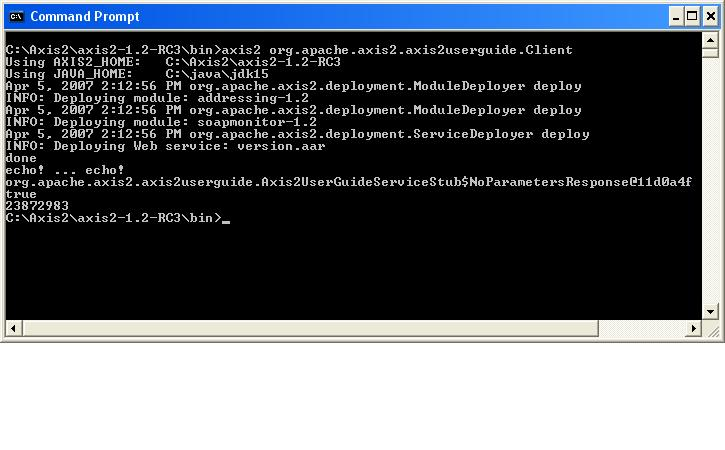

Apache Axis2 User's Guide - Creating Clients
When it comes to creating a Web service client, you can do it manually (see Building Services), but in most cases you have a Web Service Description Language (WSDL) definition that describes the messages clients should send and expect to receive. Axis2 provides several ways to use this definition to automatically generate a client.
Content
- Introducing Axis2
- Installing and Testing Client Code
- Introduction to
Services
- Creating
Clients
- Building
Services
- Samples
- For Further Study
Choosing a Client Generation Method
Axis2 gives you several options when it comes to mapping WSDL to objects when generating clients. Three of these options are Axis2 DataBinding Framework, XMLBeans, and JiBX databinding. All of these methods involve using databinding to create Java objects out of the XML structures used by the service, and each has its pros and cons. You can also generate XML in-out stubs that are not based on databinding.
Axis2 Databinding Framework (ADB): ADB is probably the simplest method of generating an Axis2 client. In most cases, all of the pertinent classes are created as inner classes of a main stub class. ADB is very easy to use, but it does have limitations. It is not meant to be a full schema binding application, and has difficulty with structures such as XML Schema element extensions and restrictions.
XMLBeans: Unlike ADB, XMLBeans is a fully functional schema compiler, so it doesn't carry the same limitations as ADB. It is, however, a bit more complicated to use than ADB. It generates a huge number of files, and the programming model, while being certainly usable, is not as straightforward as ADB.
JiBX: JiBX is a complete databinding framework that actually provides not only WSDL-to-Java conversion, as covered in this document, but also Java-to-XML conversion. In some ways, JiBX provides the best of both worlds. JiBX is extremely flexible, enabling you to choose the classes that represent your entities, but it can be complicated to set up. On the other hand, once it is set up, actually using the generated code is as easy as using ADB.
In the end, for simple structures, ADB will likely be enough for you. If, on the other hand you need more power or flexibility, whether you choose XMLBeans or JiBX depends on how much power or flexibility you need and your tolerance for complexity.
Generating Clients
The process for generating and using a client varies slightly depending on the method of generation you choose. In all three cases in this document, clients are generated from the same WSDL file (see Code Listing 5).
Note that the document defines four operations, DoInOnly, NoParameters, TwoWayOneParameterEcho, and MultipleParametersAddItem. Each of the clients will include methods for calling each of these operations.
(You can get more information on WSDL at http://www.w3.org/2002/ws/desc/ .)
Axis Data Binding (ADB)
To create a client using ADB, execute the following steps:
The short story:
- Download and unpack the Apache Axis2 Standard Distribution, if you have not done it already.
- Create the client stub with the following command (Assuming that you have Axis2UserGuide.wsdl file on your current working directory):
%AXIS2_HOME%\bin\WSDL2Java -uri Axis2UserGuide.wsdl -p org.apache.axis2.axis2userguide -d adb -s
- Create the client (for example, Client.java), a Java application that uses the generated stub, and save it in the org/apache/axis2/axis2userguide directory.
- Build the client by typing: ant jar.client.
- Assuming you have a corresponding service, run the client by adding the generated Axis2UserGuideService-test-client.jar file located in build/lib to the classpath and type: java org.apache.axis2.axis2userguide.Client
The long story:
If you have not done it already, download and unpack the Apache Axis2 Standard Distribution. The Axis2 WAR Distribution does not include the necessary utilities for generating code, such as WSDL2Java.
In the ADB method of generating clients, all the functionalities of the services are contained in a single class called a stub. The stub contains inner classes corresponding to all the necessary objects defined in the WSDL file, such as, in the case of this WSDL, DoInOnlyRequestMessage. Once you have the stub, you will be able to create a client by simply referring to these classes and their methods. To generate the client, issue the following command in Code Listing 6.
Code Listing 6 - Generating the Client
%AXIS2_HOME%\bin\WSDL2Java -uri Axis2UserGuide.wsdl -p org.apache.axis2.axis2userguide -d adb -s
This command analyzes the WSDL file and creates the stub in the package org.apache.axis2.axis2userguide. The options specify that you want the ADB data binding method (-d), and synchronous or blocking, methods (-s). In other words, when the client makes an In-Out call to the service, it will wait for a response before continuing.
Once you run this command, you will see two new items in the directory. The first is the build.xml file, which contains the instructions for Ant to compile the generated classes. The second is the src directory, which contains the actual Axis2UserGuideServiceStub.java file. If you open this file, you will see a collection of inner classes for each of the items in the WSDL file. You'll also see a number of calls to the Axis2 client API, including those that use AXIOM to build and analyze the incoming and outgoing messages.
Now you need a client to make use of this code. To create a client, create a new class and save it as Client.java in the org/apache/axis2/axis2userguide directory. It should contain the following code in Code Listing 7.
Note that using the service is simply a matter of creating and populating the appropriate type of request using the names defined in the WSDL file, and then using the stub to actually send the request to the appropriate method. For example, to call the DoInOnly operation, you create a DoInOnlyRequest, use its setMessageString() method to set the contents of its messageString element, and pass it as an argument to stub.DoInOnly().
To build the client, type: ant jar.client
This action creates two new directories, build and test. The test directory will be empty, but the build directory contains two versions of the client. The first version, in the lib directory, is a .jar file that contains the client class and the stub. The second, in the classes directory, is just raw classes.
Make sure all the jar files in the Axis2 lib directory are in the classpath.
If you have a service corresponding to this client you can run the client by adding the jar file to your classpath and typing: java org.apache.axis2.axis2userguide.Client
(If you don't have such a service,, refer to the Building services document.)
You should see the response in the console window of your servlet container. It should look something like this:

ADB is not your only option for generating Web service clients. Other options include XmlBeans, JiBX and JAXBRI.
See the Next Section -Building Services